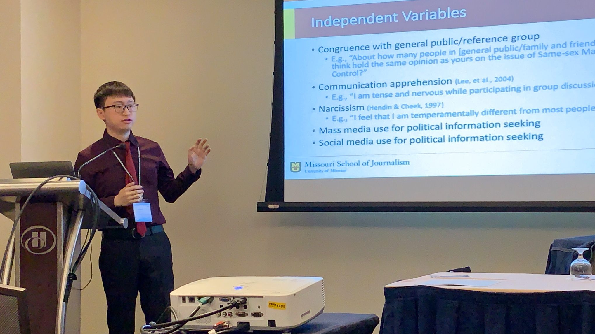

As a former journalist and editor, I am curious about media’s roles in society, the climate of public opinions, and the inclusiveness of public spheres; as a millennial who grew up in the internet and social media age, I want to know how technologies impact people’s communication and life. Therefore, in my research, I combine two lines of my interests and apply computational methods to examine the media’s roles and public opinions in a computer-mediated communication environment. Specifically, I use R and Python to scrape data from websites or APIs and develop computational algorithms such as machine learning and natural language processing to examine communication patterns and effects in online public spaces.

Journal Papers
- Hu, L., and Kearney, M.W. (2020). Gendered Tweets: Computational text analysis of gender differences in political discussions on Twitter. Journal of Language and Social Psychology.
- Hu, L. (2018) Is masculinity ‘deteriorating’ in China? Changes of masculinity representation in Chinese film posters from 1951 to 2016. Journal of Gender Studies, 27(3), 335-346.
- Hu, L. (2016) Communication effects of data journalism on Weibo (microblog). Editorial Friend (2), 70-74. (In Chinese)
- He, L., Hu, L., Li, W., and Zhang, Z. (2016). Title attractors and negative energy: Language style analysis of organizational media’s official accounts on WeChat. The Press (13), 42-47. (In Chinese)
Papers Under Revise and Resubmit
- Hu, L., (Minor Revision). Self as brand and brand as self: A 2*2 dimension conceptual model of self-branding in the digital economy. Journal of Internet Commerce.
- Zhang, W., Hu, L., & Park, J. (R&R first-round). Politics go “viral”: A computational text analysis of crisis attribution regarding the COVID-19 pandemic. Computers in Human Behavior.
- Hu, L., Kearney, M. W., & Frisby, C. M. (R&R second-round). Tweeting and retweeting: Gender discrepancies in discursive political engagement and influence on Twitter. Journal of Gender Studies.
- Xu, M., Hu, L., & Hinnant, A. (R&R first-round). Pseudo-events: Applying machine learning to track mediatization over 40 years. Journalism & Mass Communication Quarterly.
Book Chapter
- He, L., Hu, L., and Yu, L. (2016). The communication features and the psychological mechanism of rumors on WeChat. In X. Tang, X. Wu, and C. Huang (Eds.), Annual Report on Development of New Media in China (No.7) (pp. 102-118). Social Science Academic Press. (In Chinese)
Software
- Hu, L., and Kearney, M.W. (2019). healthforum: Scrape Patient Forum data (Version 0.0.1) [R package]. CRAN. https://CRAN.R-project.org/package=healthforum
- Kearney, M.W., Hu, L., and Alieva, I. (2019). ppcong: Interfacing with ProPublica’s ‘Congress’ API (Version 0.0.2) [R package]. CRAN. https://CRAN.R-project.org/package=ppcong
- Kearney, M. W., & Hu, L. (2019). wactor: Word Factor Vectors (Version 0.0.1) [R package]. CRAN. https://CRAN.R-project.org/package=wactor
- Kearney, M.W., Hvitfeldt, E., and Hu, L. (2019). textfeatures: Extracts features from text (Version 0.3.3) [R package]. CRAN. https://CRAN.R-project.org/package=textfeatures
Conference Presentations
- Hu, L., & Sheldon, K. (2021, May 27–31). Negativity is not Always Negative: Positive Effects of Negative Expression on Twitter. Paper accepted for presentation at the 71th ICA Annual Conference, Virtual.
- Zhang, W., Hu, L., and Park, J. (2020). When Virus Goes Political: A Computerized Text Analysis of Crisis Attribution on Covid-19 Pandemic. Paper presented at the 103rd AEJMC Annual Conference, Virtual.
- Hu, L., and Frisby, C.M. (2020). Reconstruct the “Spiral”: Positive and Negative Motivations Predicting Outspokenness in Online and Offline Scenarios. Paper presented at the 70th ICA Annual Conference, Gold Coast, Australia (Virtual).
- Hu, L., and Kearney, M.W. (2020). Gendered Tweets: Text Analysis of Gender Differences in Political Discussions on Twitter. Paper presented at the 70th ICA Annual Conference, Gold Coast, Australia (Virtual).
- Hu, S., and Hu, L. (2020). Predictors of Perceived Information Credibility in an Online Health Forum: A Computerized Content Analysis of Big Dataset. Paper presented at the 70th ICA Annual Conference, Gold Coast, Australia (Virtual).
- Kearney, M.W., Hu, L., and Alieva, I. (2019). Classifying Twitter Bots. Paper presented at the 102nd AEJMC Annual Conference, Toronto, Canada.
- Hu, L., and Frisby, C.M. (2019). Outside the “Spiral”: Factors Predicting Outspokenness in Online and Offline scenarios. Paper presented at the 69th ICA Annual Conference, Washington, D.C.
- Abeyta, A., Alieva, I., Park, J., Warner, B.R., Hu, L., and Kearney, M.W. (2019). Analyzing Tweets from Candidates for the U.S. Congress in the 2018 U.S. Midterm Elections. Paper presented at the 88th Annual Meeting of Central States Communication Association, Omaha, NE.
- Hu, L., and Kearney, M.W. (2018). Speaking in a woman’s name: Gender difference of political expressive participation on Twitter. Paper presented at the 101st AEJMC Annual Conference, Washington, D.C.